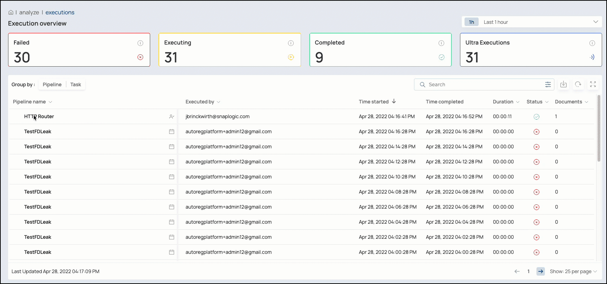
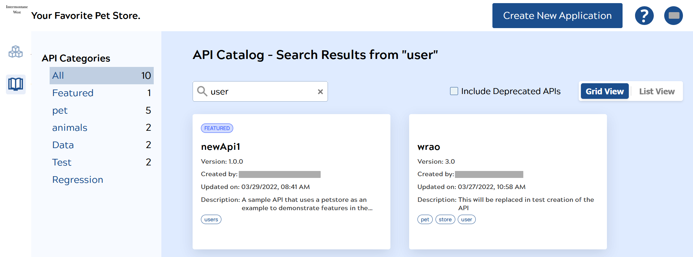

2022 May (4.29.0)
Studio
New Features
-
Execution Overview Includes Pipeline and Task Execution Details
You can now view details and execution statistics for your Pipelines and Tasks.
When you click on a Pipeline or Task, SnapLogic Studio displays a fly-out panel with information about the invocation type, the name of the Snaplex, execution times and duration, as well as information about Snap statistics, Pipeline logs, and Pipeline parameters.
The Pipeline and Task execution details enable you to survey Pipeline and Task executions in your Org and then drill deeper to understand individual Pipeline execution details.

-
New Execution Status Icons
New icons indicate Completed with Errors and Completed with Warnings statuses of your Pipeline executions when you select Route Error Data to Error View in the
setting in a Snap.
Likewise, when Snaps encounter warnings or errors, the Snap displays an icon for each state respectively to indicate the status after Pipeline execution.
- Search by Execution Status You can now filter results by several attributes, including Pipeline execution status (for example, Started) and the person who ran the execution. You can also add and remove columns and rearrange them. This functionality enables you to quickly find Pipelines in specific states, as shown in the following screenshot:
Platform
Note:
As previously announced, SnapLogic has ceased support for Windows Server 2012 on Jan 1, 2022, since this version did not support strong ciphers.
Ensure that you upgrade your Groundplex instances to Windows Server 2016 or 2019.
Enhancements
- Child Pipeline Execution States Added the capability in both the SnapLogic Studio Execution overview and Dashboard to view a child Pipeline’s status by hovering over the parent Pipeline. You can quickly identify which child Pipeline execution failed in Pipelines with the Pipeline Execute Snap. The Pipeline execution displays the icon when you select when you select Route Error Data to Error View in the setting in the Pipeline Execute Snap and either the Snap or child Pipelines encounter errors.
- Include Flows when Exporting and Migrating Added Flows as an asset type in Manager. While exporting or migrating a project, you can now also select Flows as a separate asset type.
- Logging and Monitoring Improved the logging and monitoring of events and errors related to network conditions around Snaplex instances, enabling SnapLogic Support more information to troubleshoot.
-
Migration to
sharedDirectory The Project Migration Public API can migrate assets to theshareddirectory of the project space. -
Updated Snaplex Helm chart
Version 3 of the Snaplex Helm chart includes the following enhancements:
- Support for Liveness, Readiness, and Startup Probe.
- Support for setting
SL_FILE_ULIMITandSL_PROCESS_ULIMIT. - Default Kubernetes Service type changed from NodePort to LoadBalancer.
Known Issues
- In Studio, when an Ultra Pipeline has a Snap that has an execution status of Completed with errors, the Snap Statistics tab displays the error in red and yellow, instead of only yellow as the Dashboard version of the Snap Statistics tab does.
API Management
New Features
- Proxy Mapping Rules You can now create Proxy Mapping Rules to map your Proxy endpoints to the right target depending on the conditions. Learn more about Proxy Mapping Rules.
- Proxy Publication You can also publish Proxies in the API Manager. In the Developer Portal, they appear like other APIs. Learn more about publishing a Proxy.
- Dynamic Search Dynamic Search is now available in the API Manager.
- CORS Org-wide Setting for “Try It Out” Org Administrators can now enable the “Try It Out” feature for all APIs in the Developer Portal using a default CORS Restriction Policy. However, if a CORS Restriction Policy exists at the API level or API version level, it has precedence over the default Org-wide policy. Learn more about setting up the Developer Portal.
- Auto-Approve Subscriptions When you publish an API or Proxy, you can now choose to auto-approve requests for subscriptions to the API. Learn more about publishing an API version or Proxy.
- Custom Subscription Key Parameters When you publish an API or Proxy, you can specify the header or the query parameter that the API consumer must set to the subscription secret key. Learn more about publishing an API version or Proxy.
- Fast Secret Copy API consumers can also copy the application's secret key by clicking the key icon (:SL-devport-key:) on the application's card, instead of having to edit the application entry to copy the secret key.
Enhancements
- Open API Specification (OAS) 3.0 The API Manager now accepts OAS 3.0 specifications for APIs; however, API consumers can download only OAS 2.0 specifications.
-
Bearer Authorization Header
When calling an API with an approved subscription, you must set the Authorization header as
Authorization: Bearer <client secret>, instead of usingToken. -
Featured APIs
In the Grid View of the Developer Portal, featured APIs are now easier to find with the existence of the Featured pill at the top of the API card. Featured APIs appear at the top of the API list. The API's tags are also displayed as pills at the bottom of the card.

Known Issues
-
API Dashboard
- The API Dashboard does not collect metrics for APIs that do not generate a response entity.
- When the API Management feature is enabled for the Org, the API Dashboard does not automatically start collecting data. You must restart the Snaplex nodes and allow the Dashboard to start.
- CORS Setting Delay In the tab, changes to might not take effect for up to two hours due to caching. This occurs only in JCC nodes with Snaplex Version 4.28 and older.
- No notification about modified Key Settings If an API is republished with modified Key Settings, existing subscribers are not notified of the change.